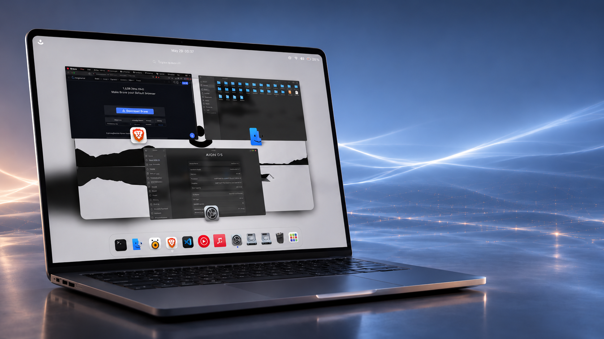
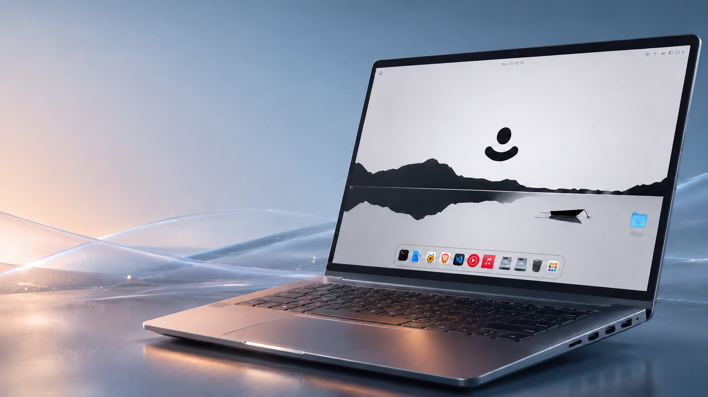
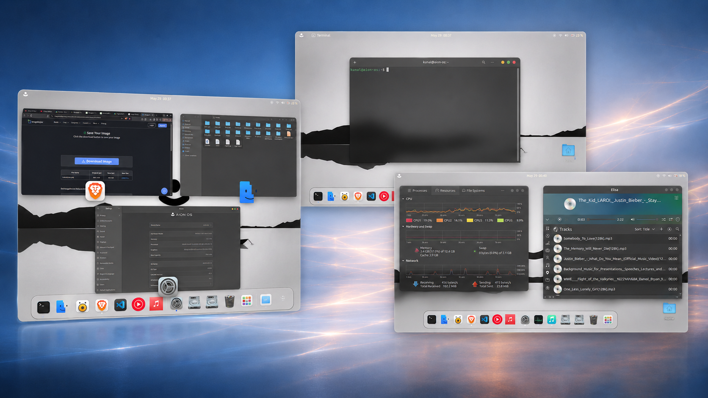
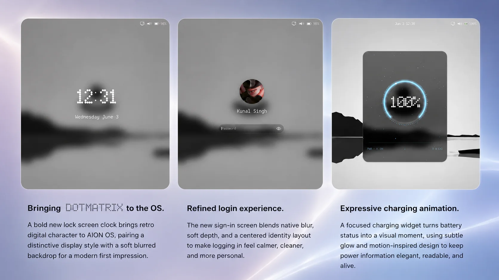
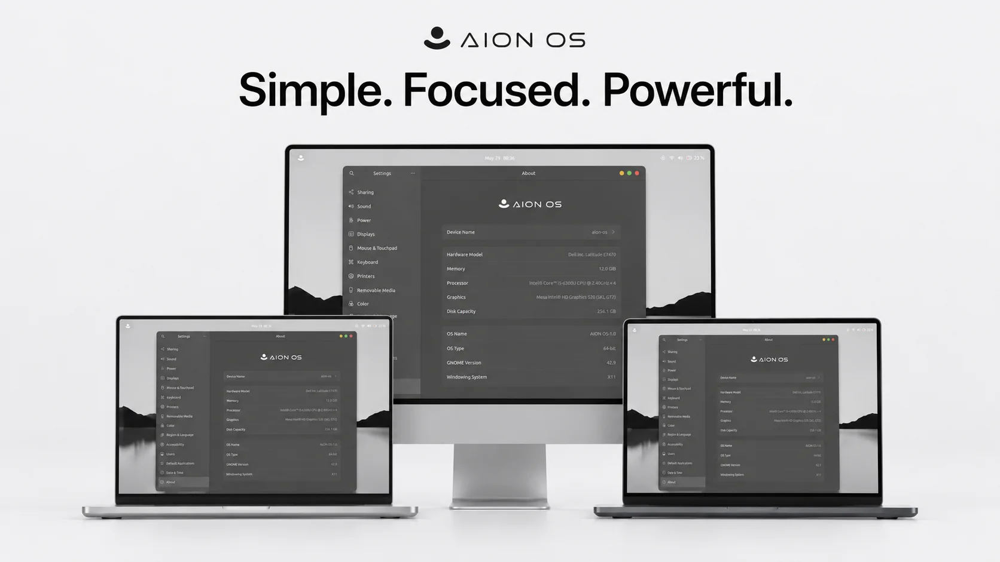
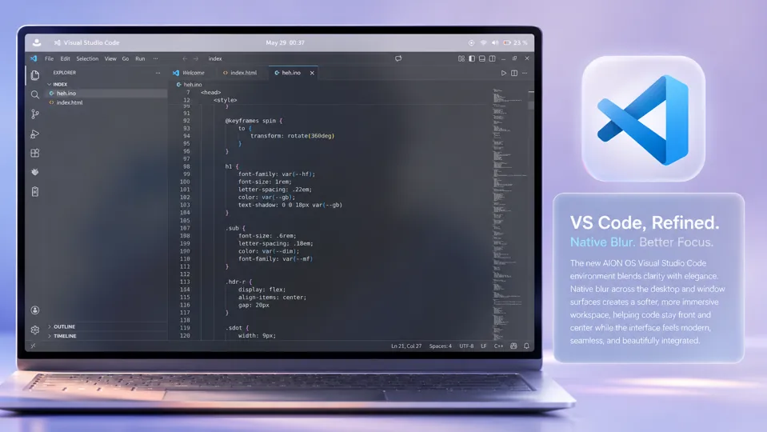
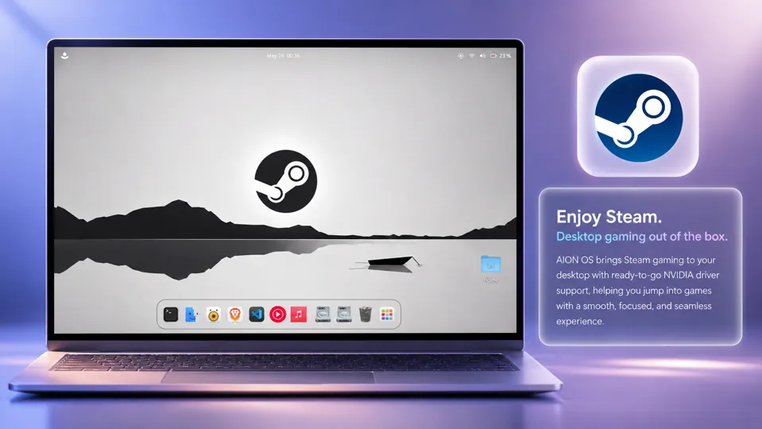
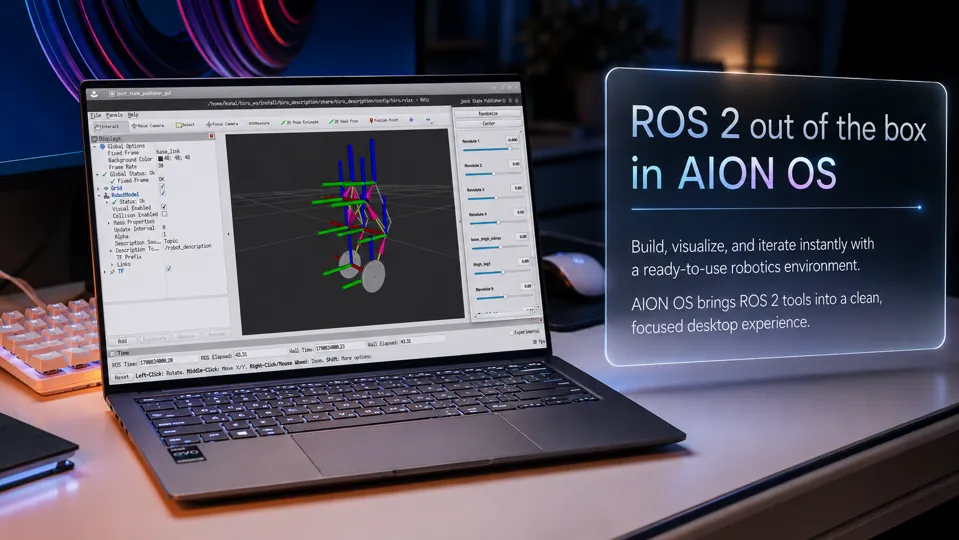

01 / Focus
Built for a distraction-free desktop.
Recent tasks, organized apps, and a minimal interface keep the workspace clean while still feeling powerful enough for serious daily use.

Meet the
A clean, glass-inspired desktop experience built around focus, speed, and community-powered evolution.
The AION OS difference
AION OS helps you stay focused with a clean desktop, smooth multitasking, organized apps, and a refined workflow that makes everyday work feel faster, lighter, and more intuitive.

01 / Focus
Recent tasks, organized apps, and a minimal interface keep the workspace clean while still feeling powerful enough for serious daily use.

02 / Native blur
System-wide glass, softer panels, subtle glow and native blur create a seamless visual language across windows, panels, launchers and everyday interactions.
System identity
A bold DOTMATRIX lock clock, centered sign-in layout and expressive charging widget give the OS a recognizable first impression.

Devices
AION OS is designed to look professional on laptops, desktops and larger displays without losing its minimal personality.


Developer workspaces blend clarity with elegance so code stays front and center.

Desktop gaming out of the box with a smooth, focused experience and driver-ready positioning.

Build, visualize and iterate with a ready-to-use robotics environment.
Gallery
Swipe horizontally, use the arrows, or open a snapshot for a larger view.
Get AION OS
Use this area for ISO downloads, checksums, release notes, documentation, known issues and minimum requirements.